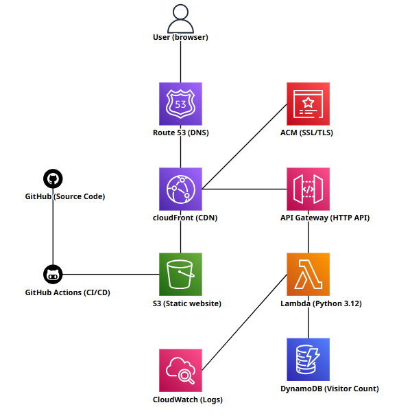

AWS Cloud Resume Challenge
Built and deployed a full-stack serverless personal website on AWS. Static files are hosted in S3 and served globally through CloudFront with a custom domain and HTTPS via ACM. A visitor counter is powered by a Lambda function (Python) backed by DynamoDB, exposed through API Gateway and routed via CloudFront. The entire infrastructure is defined as code using CloudFormation and deployed with a single script. A GitHub Actions CI/CD pipeline automatically syncs website updates to S3 and invalidates the CloudFront cache on every push to main.
